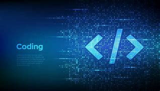
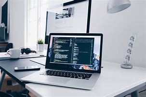

What is blogging
Blogging is the act of creating and sharing content on a website, often in the form of articles, stories, or updates.
It allows individuals or organizations to express their ideas, share knowledge, and connect with an audience. Blogs can cover
a wide range of topics, from personal experiences to professional advice, and are a powerful tool for communication, education, and even monetization.
Read More

How to get into coding
Getting into coding starts with choosing a programming language based on your goals (e.g., Python for beginners, JavaScript for web development).
Utilize free resources like Codecademy, freeCodeCamp, or YouTube tutorials to learn the basics. Practice regularly by building small projects,
and join coding communities like GitHub or Stack Overflow for support. Consistency, curiosity, and problem-solving are key to becoming a successful coder.
Read More

Best laptops for programming
Choosing the best laptop for programming depends on your needs, such as performance, portability, and budget. Key features to look for include
a fast processor (e.g., Intel i7 or AMD Ryzen 7), sufficient RAM (16GB or more), a solid-state drive (SSD) for quick storage, and a comfortable keyboard.
Popular options include the MacBook Pro for macOS development, Dell XPS 15 for Windows users, and Lenovo ThinkPad X1 Carbon for its durability and performance.
Read More